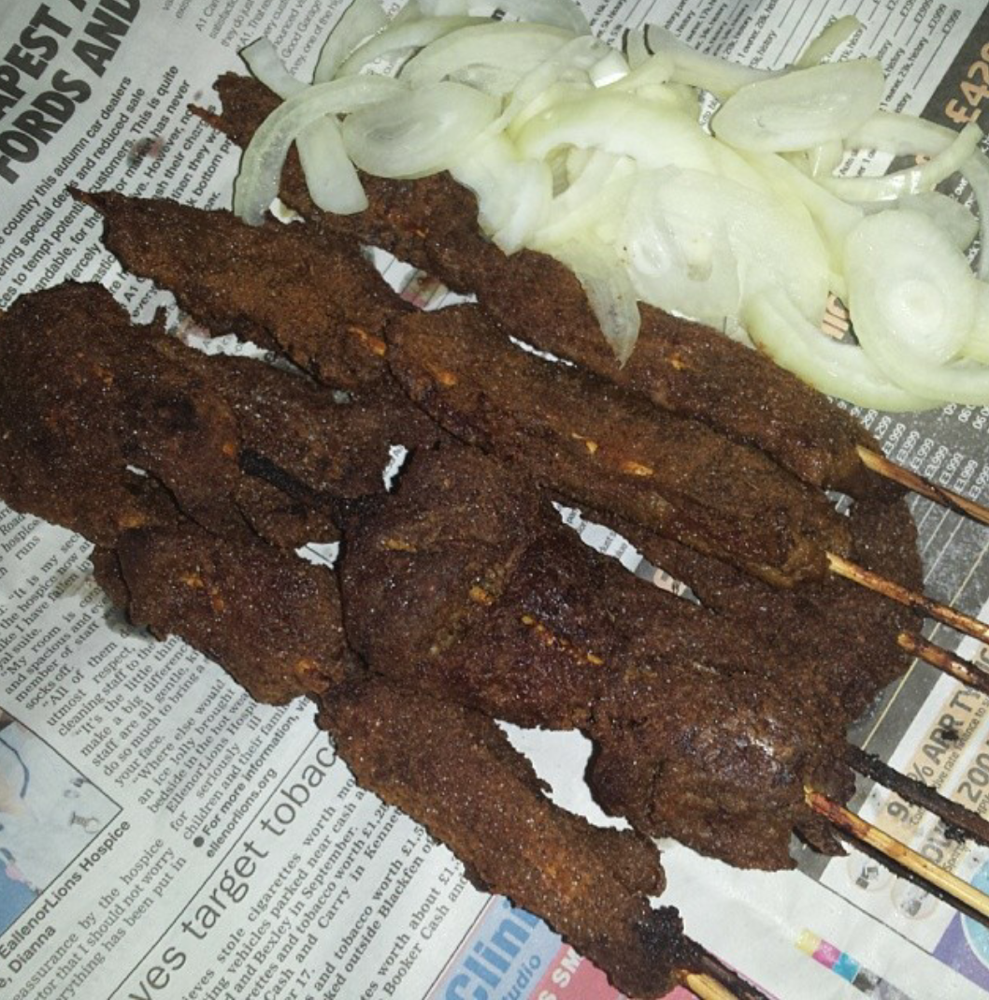

Description of the Image
File Type Information
This image is a PNG. A PNG is a type of raster image file that is commonly used on the internet. PNG's do not lose any quality when they are compressed.
Why I Chose This Image
At this point I was in too deep with the food so I decided to keep on theme and choose another Nigerian dish.
Source
This image is from Wikimedia Commons.
Image Source: My Source